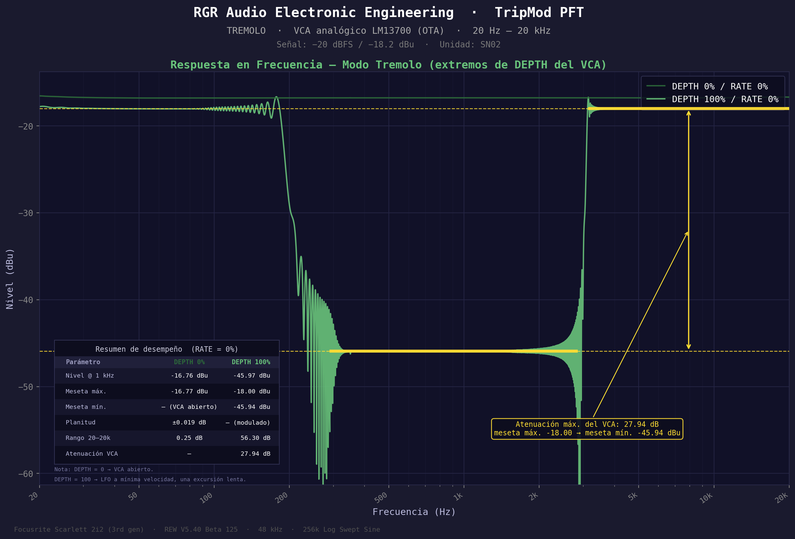
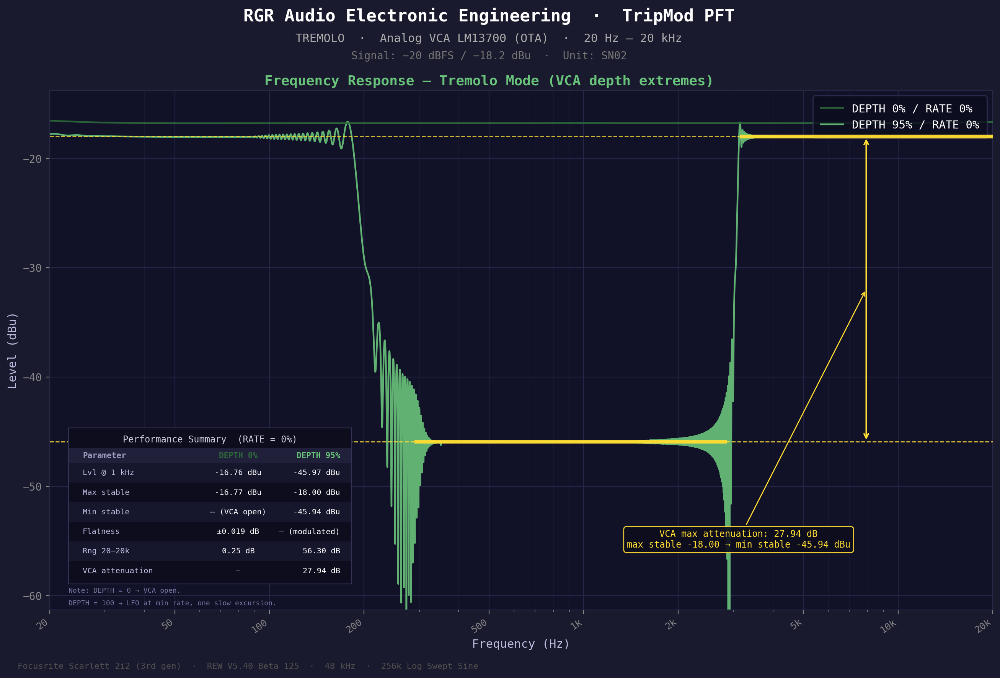
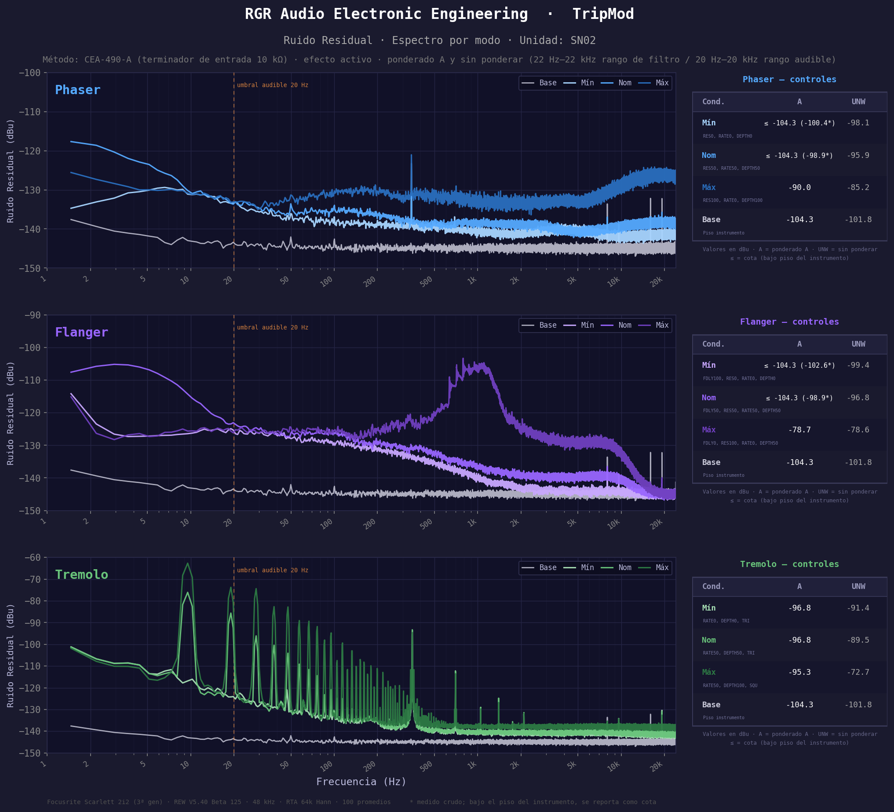
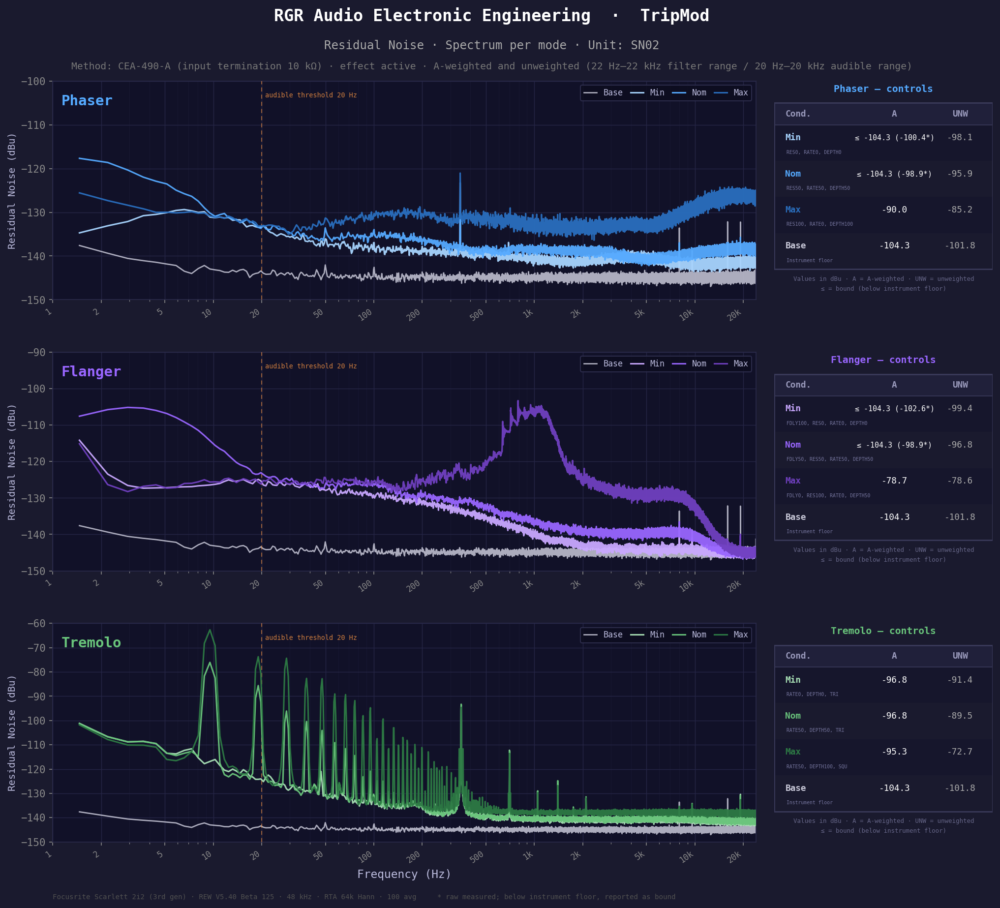

Certificado de Calidad
Quality Certificate
Esta unidad fue inspeccionada y probada individualmente antes de su envío. Se aplicaron puntos de chequeo de firmware, de hardware, calibración individual de efectos y análisis de calidad de audio.
This unit was individually inspected and tested before shipping. Quality control applied: firmware check-points, hardware verification, individual effect calibration, and audio quality analysis.
Test de Firmware
Firmware Test
| Categoría | Category |
Ítems | Items |
Resultado | Result |
| EEPROM / Factory Reset | EEPROM / Factory Reset |
QC01–03, QC22 |
PASS |
| Footswitches Panel | Panel Footswitches |
QC04–07 |
PASS |
| Relé + Anti-Pop (medido) | Relay + Anti-Pop (measured) |
QC08–10 |
PASS |
| Pedal de Expresión | Expression Pedal |
QC11–13 |
PASS |
| Footswitch Externo TS | External Footswitch TS |
QC14–16 |
PASS |
| MIDI (Program + Control Change) | MIDI (Program + Control Change) |
QC17–18 |
PASS |
| Power Cycle Stress | Power Cycle Stress |
QC19–20 |
PASS |
| Combinación de Efectos | Effect Combination |
QC21 |
PASS |
Test de Hardware — Eléctricos
Hardware Test — Electrical
| Punto de Medición | Measurement Point |
Esperado | Expected |
Medido | Measured |
| +9.0V Input |
9.0V ±5% | 9.0V |
| +9.0V post filtro DC/DC | +9.0V post DC/DC filter |
9.0V ±5% | 8.99V |
| +5.0V lógica | +5.0V logic |
5.0V ±2% | 5.011V |
| +5V MCU / AVCC |
5.0V ±2% | 5.013V |
| LFO Phaser Bias |
5.1V ±2% | 5.151V |
| LFO Flanger Bias |
5.66V ±2% | 5.668V |
| LFO Tremolo Bias |
4.5V ±2% | 4.452V |
| Corriente en reposo | Idle current |
80mA ±20% | 77.2mA |
| Corriente máxima | Maximum current |
120mA ±20% | 117.6mA |
| LFO — DEPTH 100% | LFO — DEPTH 100% |
Amplitud | Amplitude |
Frecuencia | Frequency |
| Phaser — RATE máx | Phaser — RATE max |
1220 mVpp | 10.99 Hz |
| Phaser — RATE mín | Phaser — RATE min |
1090 mVpp | 0.064 Hz |
| Flanger — RATE máx | Flanger — RATE max |
3400 mVpp | 11.36 Hz |
| Flanger — RATE mín | Flanger — RATE min |
3480 mVpp | 0.064 Hz |
| Tremolo — RATE máx | Tremolo — RATE max |
4080 mVpp | 23.15 Hz |
| Tremolo — RATE mín | Tremolo — RATE min |
5240 mVpp | 1.163 Hz |
Todas las formas de onda fueron verificadas y medidas en osciloscopio en integración electrónica.
All waveforms were verified and measured on oscilloscope during electronic integration.
Respuesta en Frecuencia — Phaser
Frequency Response — Phaser
Barrido logarítmico 20 Hz - 20 kHz en los extremos de resonancia (RES 0 / 50 / 100%). Se identifican los dos picos y los dos notches característicos del filtro pasa-todo analógico de 4º orden.
Logarithmic sweep 20 Hz - 20 kHz across resonance extremes (RES 0 / 50 / 100%). The two peaks and two characteristic notches of the 4th-order analog all-pass filter are identified.
| Punto | Point | Frecuencia | Frequency | Nivel | Level |
|---|
| Pico 1 (RES 100%) | Peak 1 (RES 100%) | 231 Hz | -12.9 dBu |
| Pico 2 (RES 100%) | Peak 2 (RES 100%) | 3987 Hz | -13.0 dBu |
| Notch 1 (RES 100%) | Notch 1 (RES 100%) | 1600 Hz | -63.9 dBu |
| Notch 2 (RES 100%) | Notch 2 (RES 100%) | 9337 Hz | -52.3 dBu |
Respuesta en Frecuencia — Flanger
Frequency Response — Flanger
Barrido en los extremos de REGENERACIÓN y RETARDO (BBD). Se identifican el 1er y el 5º notch con su frecuencia, nivel y el retardo BBD equivalente — que corresponde a los extremos controlados por el knob F.DELAY.
Sweep across REGEN and DELAY (BBD) extremes. The 1st and 5th notches are identified with frequency, level, and the equivalent BBD delay — corresponding to the extremes controlled by the F.DELAY knob.
| Notch | Notch | Frecuencia | Frequency | Nivel | Level | Retardo BBD | BBD Delay |
|---|
| 1er notch (F.DELAY mín.) | 1st notch (F.DELAY min.) | 435.42 Hz | -35.97 dBu | 1.148 ms |
| 5º notch (F.DELAY máx.) | 5th notch (F.DELAY max.) | 347.90 Hz | -42.49 dBu | 13.065 ms |
Respuesta en Frecuencia — Tremolo
Frequency Response — Tremolo
Comparativa entre señal sin modular (DEPTH 0%) y modulada en el extremo (DEPTH 100%), mostrando la atenuación máxima real del VCA analógico LM13700 y la amplificación máxima respecto a la señal de referencia.
Comparison between unmodulated signal (DEPTH 0%) and modulated at the extreme (DEPTH 100%), showing the actual maximum attenuation of the analog LM13700 VCA and the maximum amplification relative to the reference signal.


| Parámetro | Parameter | Valor | Value |
|---|
| Meseta máx. (DEPTH 0%) | Max. plateau (DEPTH 0%) | -16.77 dBu |
| Meseta mín. (DEPTH 100%) | Min. plateau (DEPTH 100%) | -45.94 dBu |
| Atenuación máx. del VCA | Max. VCA attenuation | 27.94 dB |
| Amplificación máx. (calculada) | Max. amplification (calculated) | 1.43 dB |
Amplificación máx. = Meseta máx. (DEPTH 0%) − Señal de referencia = −16.77 dBu − (−18.2 dBu) = 1.43 dB.
Max. amplification = Max. plateau (DEPTH 0%) − Reference signal = −16.77 dBu − (−18.2 dBu) = 1.43 dB.
Ruido Residual
Noise Floor
Método CEA-490-A (terminador de entrada 10 kΩ), efecto activo, ponderado A y sin ponderar. Para cada efecto se muestran 3 condiciones (Mín / Nom / Máx).
CEA-490-A method (10 kΩ input terminator), effect active, A-weighted and unweighted. For each effect, 3 conditions are shown (Min / Nom / Max).


| Efecto | Effect | Mín | Nom | Nom | Máx | Max |
|---|
| Phaser |
≤ -104.3 dBu* (A), -98.1 dBu (UNW) |
≤ -104.3 dBu* (A), -95.9 dBu (UNW) |
-90.0 dBu (A), -85.2 dBu (UNW) |
| Flanger |
≤ -104.3 dBu* (A), -99.4 dBu (UNW) |
≤ -104.3 dBu* (A), -96.8 dBu (UNW) |
-78.7 dBu (A), -78.6 dBu (UNW) |
| Tremolo |
-96.8 dBu (A), -91.4 dBu (UNW) |
-96.8 dBu (A), -89.5 dBu (UNW) |
-95.3 dBu (A), -72.7 dBu (UNW) |
A = ponderado A · UNW = sin ponderar · * medido crudo, bajo el piso de ruido del instrumento (Focusrite Scarlett 2i2), se reporta como cota superior. Base (bypass, piso del instrumento) para los tres efectos: A -104.3 dBu, UNW -101.8 dBu. Criterio de aceptación (RGR): ≤ -70 dBu en A y UNW para todos los efectos y condiciones.
A = A-weighted · UNW = unweighted · * raw measurement, below the instrument's own noise floor (Focusrite Scarlett 2i2), reported as an upper bound. Base (bypass, instrument floor) for all three effects: A -104.3 dBu, UNW -101.8 dBu. Acceptance criterion (RGR): ≤ -70 dBu on A and UNW for all effects and conditions.
Calibración de Efectos
Effect Calibration
| Efecto | Effect |
Procedimientos | Procedures |
Fecha | Date |
Estado | Result |
| Phaser |
Bypass, Bias LFO, Waveform | Bypass, LFO Bias, Waveform |
23/11/2025 | PASS |
| Flanger |
Bypass, Reloj VCF, BBD Bias, Resonancia | Bypass, VCF Clock, BBD Bias, Resonance |
23/11/2025 | PASS |
| Tremolo |
Rango DEPTH, Forma de onda | DEPTH range, Waveform |
17/06/2025 | PASS |
Registro de calibración: PFT Calibration Pedal v1.1 — SN02
Calibration record: PFT Calibration Pedal v1.1 — SN02
Aprobación
Approval
Aprobación: esta unidad TripMod TM.PFT-V1.1-26.06-02 cumple con todos los criterios de calidad establecidos por RGR Audio Electronic Engineering y queda aprobada para su entrega.
Approval: this TripMod unit TM.PFT-V1.1-26.06-02 meets all quality criteria established by RGR Audio Electronic Engineering and is approved for delivery.
Responsable QC — Reinaldo González Reyes
QC Responsible — Reinaldo González Reyes
Fecha — 25/07/2026
Date — 25/07/2026
Manual de Usuario completo disponible en: rgr-audio-ee.github.io/tripmod-manual
Full User Manual available at: rgr-audio-ee.github.io/tripmod-manual
 Certificado de Calidad
Quality Certificate
Certificado de Calidad
Quality Certificate